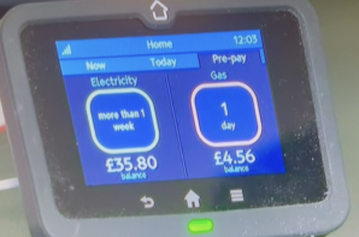
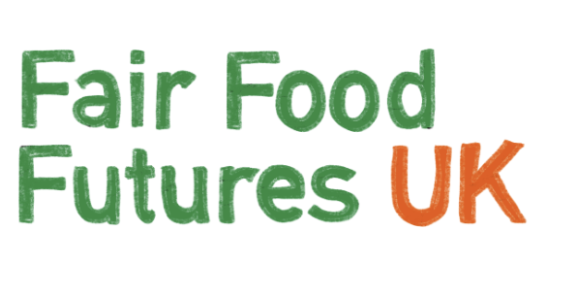
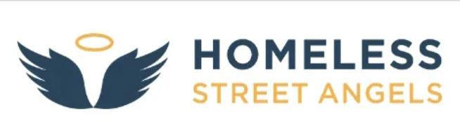

Fuel Poverty in Leeds - BBC Look North (February 2025)
Click image to access YouTube video.

This is a student project redesign – not the official Leeds Food Aid Network site.
Click image to access YouTube video.

Click logo below to access article
Click the logo to access

Click logo to access
Click logo to access

Click logo for access
Click logo for access